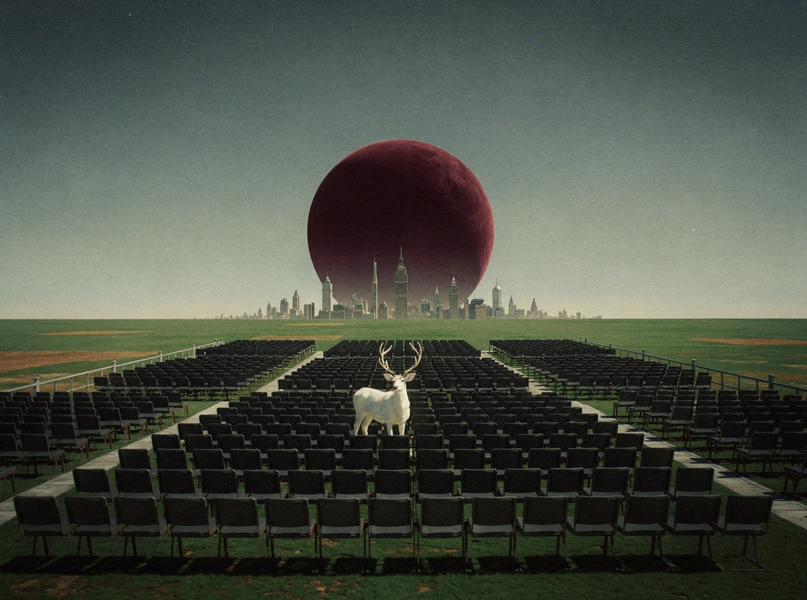
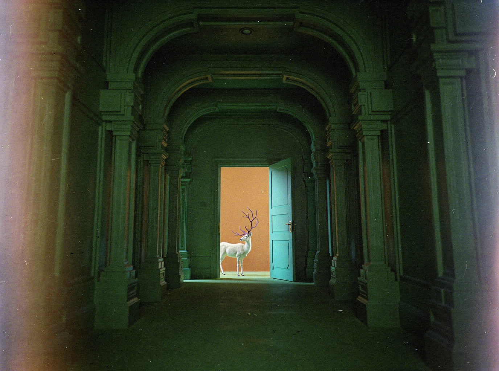
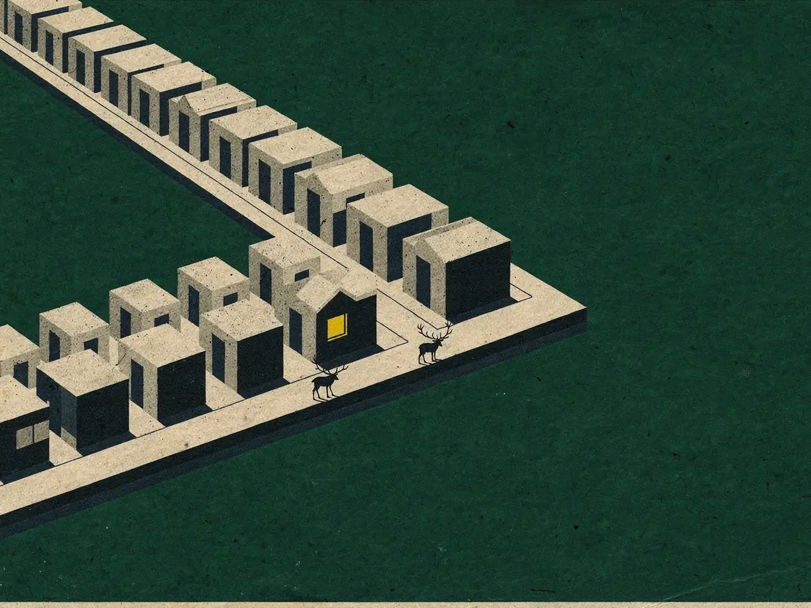
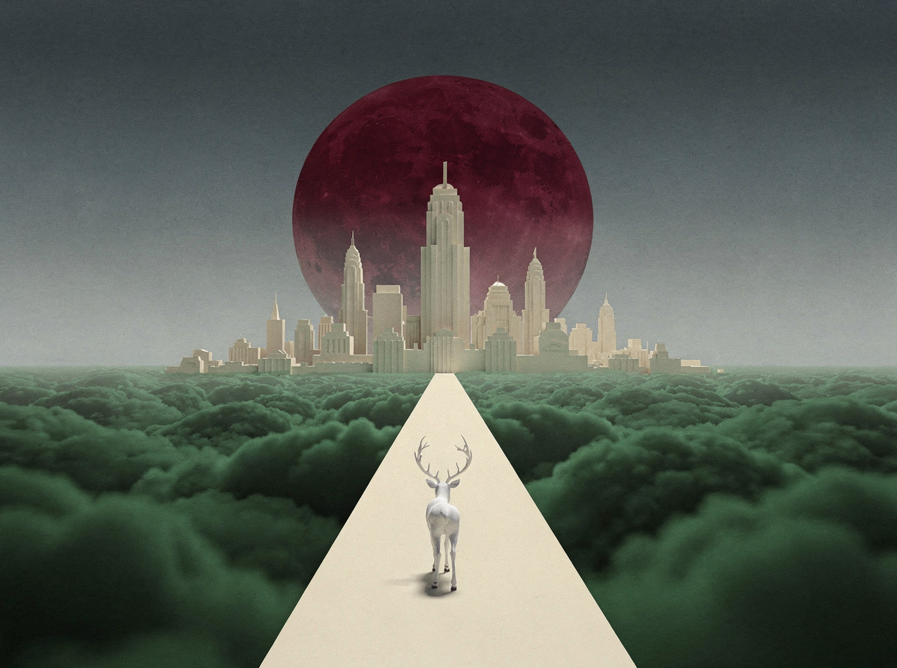

Sag, was
Du meinst.Say what
you mean.
Disce ist ein KI-gestütztes System für berufliches Deutsch: Diagnose, gezieltes Training und Rückmeldung für Situationen, die über die Karriere entscheiden — Bewerbungsgespräch, Berufsalltag und der nächste Karriereschritt. Das Proof of Principle (Cervus) ist abgeschlossen; der nächste Prototyp wird entwickelt, eine Private Beta ist geplant.Disce is an AI-supported system for professional German: diagnosis, targeted practice, and feedback for the situations that decide a career — the job interview, day-to-day work, and the next career step. The Cervus proof of principle is complete; the next prototype is in development and a private beta is planned.
Weniger Zeit dafür, einen Satz vorher im Kopf zu proben. Mehr Aufmerksamkeit für das Argument selbst. An einem deutschen Gespräch teilnehmen, statt ihm zu folgen.Less time spent rehearsing a sentence before saying it. More attention left for the argument itself. Participating in a German conversation rather than tracking it.
Sie haben B2 oder C1, und trotzdem fehlt etwas.You have B2 or C1, but something is still missing.
Viele fortgeschrittene Lernende verstehen Deutsch gut. Im entscheidenden Moment fehlt die Präzision: das passende Register, die angemessene Höflichkeit, der Ton, der tatsächlich ankommt.Many advanced learners understand German well. In the decisive moment, precision is what's missing: the right register, adequate politeness, the tone that actually lands.
Verstehen, ohne zu sagenUnderstanding without saying
In Besprechungen, Seminaren oder Behördenterminen denken Lernende mehr, als sie tatsächlich sagen. Das Verstehen ist dem Ausdruck davongelaufen.In meetings, seminars, or appointments with authorities, learners think more than they actually say. Comprehension has outpaced expression.
Unsicherheit im TonUncertainty of tone
Klingt das zu direkt? Zu weich? Zu umgangssprachlich? Zu förmlich? Am Register, nicht am Wortschatz, kommen fortgeschrittene Lernende ins Stocken.Does this sound too direct? Too soft? Too colloquial? Too formal? Register, not vocabulary, is where advanced learners stall.
Kursfortschritt ≠ Fortschritt im LebenCourse progress ≠ life progress
Zertifikate sammeln sich an, aber Präsentationen, Bewerbungen und Alltagsgespräche werden nicht leichter. Die meisten Lernenden, die B2 erreichen, bleiben dort stehen; der Schritt zu C1 gelingt selten ohne gezielte Arbeit.Certificates accumulate, but presentations, applications, and everyday conversation don't get any easier. Most learners who reach B2 stall there, and the step up to C1 rarely happens without targeted work.

Weniger Zeit dafür, einen Satz vorher im Kopf zu proben. Mehr Aufmerksamkeit für das Argument selbst. An einem deutschen Gespräch teilnehmen, statt ihm zu folgen.Less time spent rehearsing a sentence before saying it. More attention left for the argument itself. Participating in a German conversation rather than tracking it.Was wir mit Disce verändern wollenWhat we are building Disce to change
Sie sind fachlich kompetent. Die Sprache verstellt anderen den Blick darauf.You are competent. The language is what keeps others from seeing it.
Disce ist kein allgemeines Deutsch. Es ist das Deutsch, das über konkrete berufliche Situationen entscheidet. Wir beginnen mit zwei Gruppen: internationalen Ärztinnen und Ärzten in Vorbereitung auf die Fachsprachprüfung und internationalen Fachkräften, die Deutsch für Besprechungen, Präsentationen, Kundengespräche und den nächsten Karriereschritt brauchen.Disce is not general German. It is the German that decides specific professional situations. We are starting with two groups: international doctors preparing for the Fachsprachprüfung, and international professionals who need German for meetings, presentations, client conversations and the next step in their career.
Ärztinnen und Ärzte in Vorbereitung auf die FachsprachprüfungDoctors preparing for the Fachsprachprüfung
Die Prüfung dauert sechzig Minuten: ein Gespräch mit einer Patientin, ein Arztbrief, eine Übergabe an eine Kollegin. Das klinische Wissen ist selten das Hindernis. Der Wechsel zwischen Fachsprache und Umgangssprache unter Prüfungsbedingungen ist es. Disce trainiert genau diese drei Situationen, mit Rückmeldung zum Register statt zu Vokabelzahlen.The examination lasts sixty minutes: a conversation with a patient, an Arztbrief, a handover to a colleague. Clinical knowledge is rarely the obstacle. Moving between Fachsprache and everyday language under examination conditions is. Disce trains those three situations directly, with feedback on register rather than vocabulary counts.
Fachkräfte, die Deutsch brauchen, das im Beruf trägtProfessionals who need German that holds up at work
Die Besprechung wechselt ins Deutsche, und die Entscheidungen fallen ohne Sie. Im Mitarbeitergespräch fällt das Wort Kommunikation, ohne dass gesagt wird, was sich ändern soll. Die Rolle mit Kundenkontakt geht an eine Kollegin. Disce trainiert Besprechungen, Präsentationen, Kundengespräche und Mitarbeitergespräche, im Vokabular Ihres eigenen Fachs.The meeting switches to German and the decisions are made without you. The performance review mentions communication without saying what to change. The client-facing role goes to a colleague. Disce trains meetings, presentations, client conversations and performance reviews, in the vocabulary of your own field.
Ein klarer Weg, keine Vokabelliste.A clear path, not a vocabulary list.
Ein Ziel setzen, eine kurze Standortbestimmung machen und dann genau das trainieren, was echte Kommunikation von Ihnen verlangt. Mit Rückmeldung, die auf gesicherter Lernpsychologie beruht und nicht auf Punktejagd.Set a goal, take a short benchmark, then train precisely what real communication demands of you, with feedback grounded in established learning psychology rather than gamified point-chasing.
Ein Ziel wählenChoose a goal
Die B2-Prüfung, eine Präsentation, eine Bewerbung, der Alltag im DACH-Raum. Die lernende Person legt fest, woran alles Weitere ausgerichtet wird.The B2 exam, a presentation, a job application, everyday life in the DACH region. The learner defines what everything else is calibrated against.
Eine kurze StandortbestimmungA short benchmark
In 12 bis 15 Minuten ermitteln wir den Stand in Sprechen, Schreiben, Hören und Lesen, einschließlich Register und Prosodie und nicht nur des abrufbaren Wortschatzes.In 12–15 minutes, we establish where the learner stands across speaking, writing, listening, and reading, including register and prosody rather than vocabulary recall alone.
Tägliches, strukturiertes CoachingDaily, structured coaching
Kurze Schreib- und Sprecheinheiten mit Rückmeldung zu Ton, üblichen Formulierungen und kommunikativer Wirkung, dazu ein transparentes, mehrdimensionales Fortschrittsprofil.Short writing and speaking sessions with feedback on tone, typical phrasing, and communicative effect, plus a transparent, multidimensional progress profile.


Weniger Zeit dafür, einen Satz vorher im Kopf zu proben. Mehr Aufmerksamkeit für das Argument selbst. An einem deutschen Gespräch teilnehmen, statt ihm zu folgen.Less time spent rehearsing a sentence before saying it. More attention left for the argument itself. Participating in a German conversation rather than tracking it.Was wir mit Disce verändern wollenWhat we are building Disce to change
Ein Gründungsteam auf dem Weg zur Eintragung.A founding team building toward incorporation.
Fünf Gründerinnen und Gründer aus Lernpsychologie, interkultureller Strategie, Marketing und Operations sowie Business Development, unterstützt von Beratenden aus der Berliner Gründungsszene und der Universität Potsdam.Five founders spanning learning psychology, intercultural strategy, marketing and operations, and business development, supported by advisors from Berlin's startup ecosystem and the University of Potsdam.

Die Entwicklung verfolgen oder Interesse anmelden.Follow the build, or register interest.
Disce steht vor der Eintragung mitten in der Validierung. Verfolgen Sie den Entwicklungsstand oder melden Sie unverbindlich Ihr Interesse an der geplanten Private Beta an.Disce is in active validation ahead of incorporation. Track the development status, or register your interest in the planned private beta.